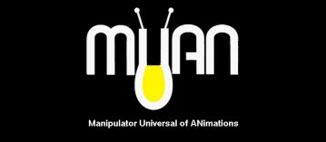
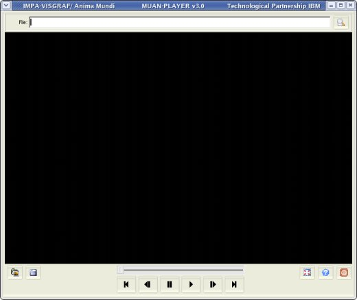
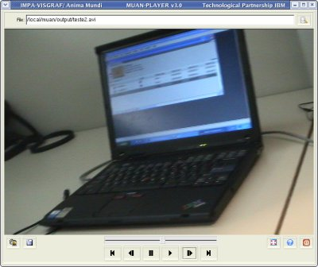
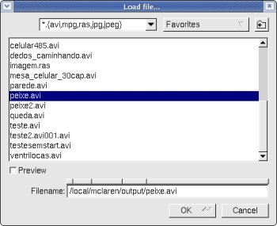
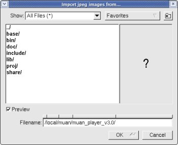
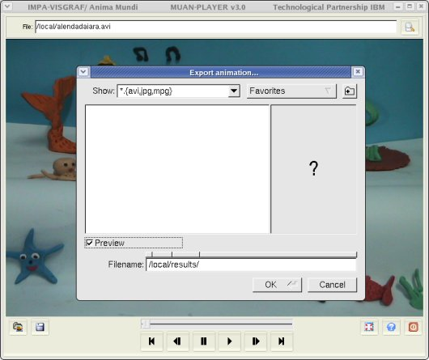

|
 |
|
MUAN_PLAYER - User Manual |
MUAN_PLAYER is an auxiliary tool provided by MUAN System. Developed to allow simple, easy and fast playing/visualization of animations, it does not open connections with cameras. So, even in computers without capture hardware, it is possible to see/play animations.
The image below shows the user interface of MUAN_PLAYER. Click on an element to see its description.

Usage
>
muan_player [ file_name ]
In the terminal, when passing a
file name as argument to muan_player, the application will start loading this
animation.
|
Use the Edit Text File to specify the file name (with path) of a desired animation. To load it, press ENTER.
|
 |
Main commands
Central panel of MUAN where images/animations are shown.
Control indicating the current frame position within the animation.
Go to the first captured image of animation and show it in Image Panel.
Shortcut: HOME

Back to the previous captured image of animation and show it in Image Panel.
Shortcut: <

Stop playing the animation.
Shortcut: PAUSE

Start playing the animation.
Shortcut: CTRL+ENTER

Increments the current frame's position by 1.
Shortcut: >

Go to the last captured image of animation and show it in Image Panel.
Shortcut: END

Loads an animation or image already saved in computer.
Supported formats: avi, mpg, ras and jpg.
Shortcut: CTRL+G

Shows the name and path of the current file
(that is, the animation shown in panel image). It also can be used to load a new
file. To do this, write the file name on it and press ENTER.

Inserts all jpg images from a directory using alfa-numeric filename sequence.
Shortcut: CTRL+M

Exports the current animation to a new format. Available formats:
Shortcut: CTRL+E
Important: In the Export Dialog, inform the filename with the desired extension (format). E.g.: test.mpg defines that the file will be saved in mpeg1 format.

Shows the Image Panel covering the whole screen. To restore the normal view, press ESC.
Shortcut: ALT+ENTER
Opens a browser showing this user manual.
Quit the program.
Shortcut: ESC
| Concept and Application |
Development |
Technological Partnership |